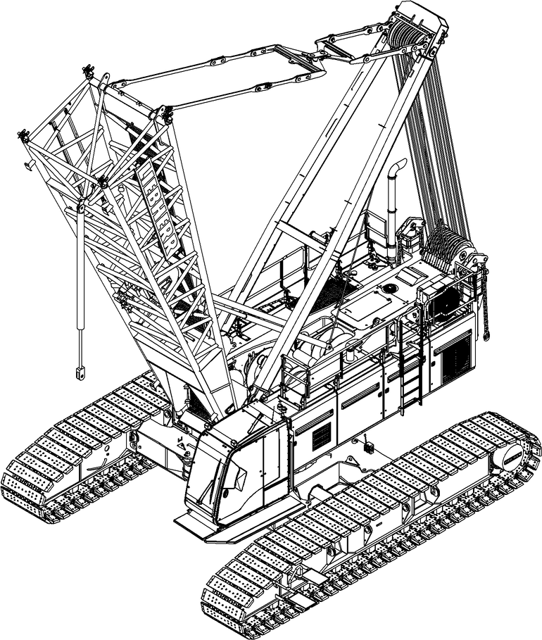

Maschine als Selbstmontagehilfe einsetzen
Sicherstellen, dass folgende Voraussetzungen erfüllt sind:
❑ | Zulässige Anschlagmittel sind vorhanden (Weitere Informationen siehe: „Anschlagmittel“). |

Fig. 4671: Maschine als Selbstmontagehilfe einsetzen
Fig. 4671: Maschine als Selbstmontagehilfe einsetzen
Hauptausleger-Verstellwinde abspulen. |
A-Bock1 bewegt sich nach vorne. |

Taste Montagezylinder am Steuerpult X23 drücken. |
Montagezylinder ist gewählt. |
Montagezylinder ausfahren. |
Sicherungsfeder 2 und Bolzen 3 an Montagezylinder 1 entfernen. |
Anschlagmittel einhängen. |
Bolzen 3 an Montagezylinder 1 einsetzen. |
Bolzen 3 mit Sicherungsfeder 2 sichern. |
Anschlagmittel ist mit Montagezylinder verbolzt und gesichert. |

Hinweis
Wenn ein Hauptausleger mit Hilfe des Selbstmontagesystems angebaut wird: | |
Hauptausleger zusammenbauen (Weitere Informationen siehe: „Hauptausleger zusammenbauen“). | |